How to Edit Files in the Microsoft Notepad App (Windows 11)
This tutorial covers:
How to Edit Text in Notepad
How to Select Text in Notepad:
How to Copy Text in Notepad:
How to Cut Text in Notepad:
How to Paste Text in Notepad:
How to Delete Text in Notepad:
No time to scroll down? Click through these tutorial slides:
See it in action with this tutorial video:
How to Edit Text in Notepad
- Step 1: First open Notepad. Click inside a Notepad window or tab, and type any text. 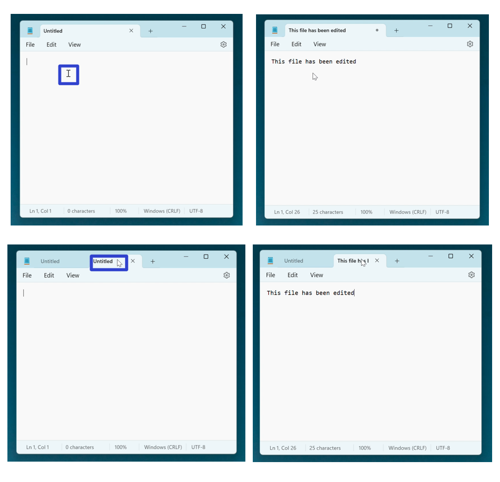
How to Select Text in Notpad
- Method 1: Edit a Notepad file. Double click the text. 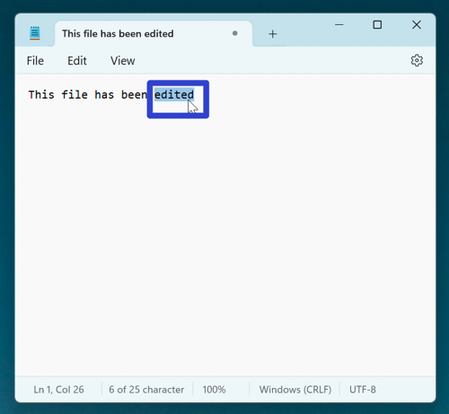
- Method 2: First edit a Notepad file. Click, hold, and drag the mouse to the left or right. Release the mouse to stop selecting text. 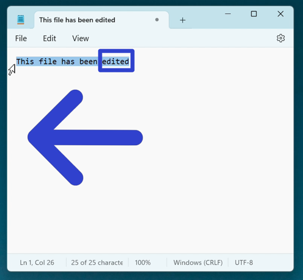
- Method 3: Edit a Notepad file. Hold Shift and press the arrow keys. 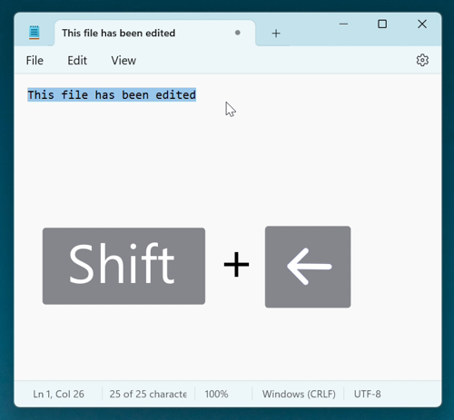
How to Select Text With Menu
- Step 1: First edit a Notepad file. In the upper left click the “Edit” button.

- Step 2: In the menu that opens, click “Select all”. 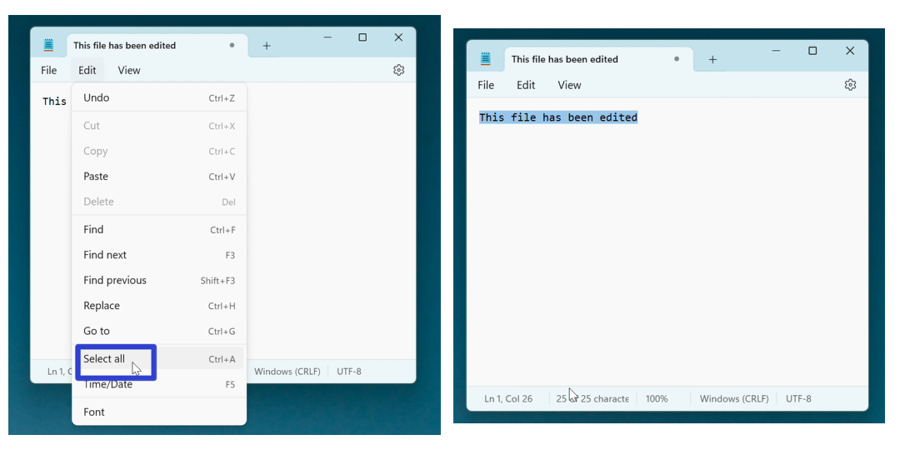
How to Select Text With Right Click
- Step 1: Edit a Notepad file. Right click anywhere in the Notepad window.

- Step 2: In the menu that opens, click “Select all”. 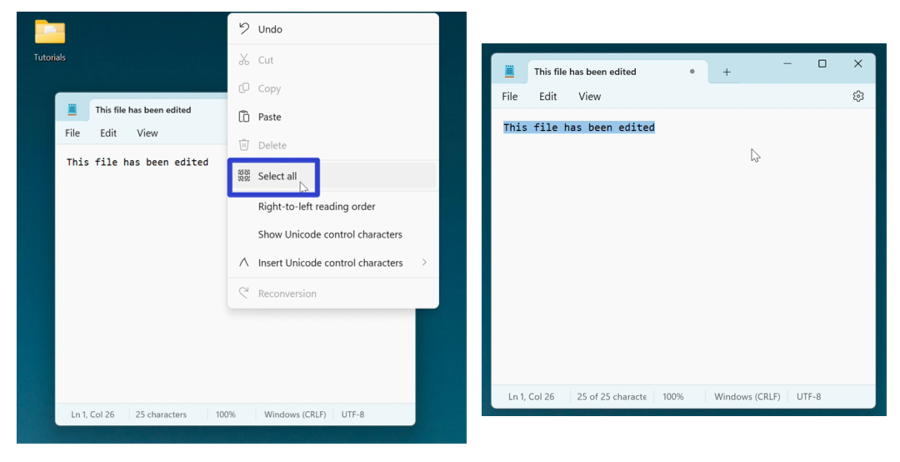
How to Select Text With Keyboard Shortcut
- Step 1: First edit a Notepad file. On the keyboard press Ctrl + A.
How to Copy Text With Menu
- Step 1: Edit a Notepad file and select any text. Click the “Edit” button. 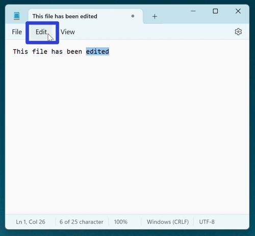
- Step 2: In the menu that opens, click “Copy”. 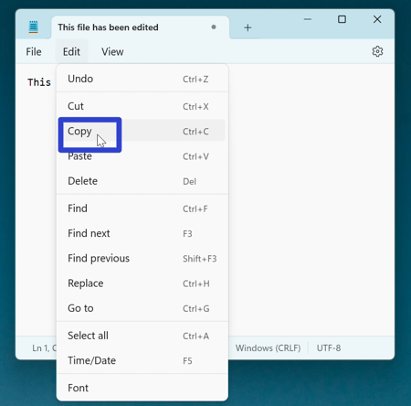
How to Copy Text With Right Click
- Step 1: First edit and select text in a Notepad file. Right click anywhere inside the window. 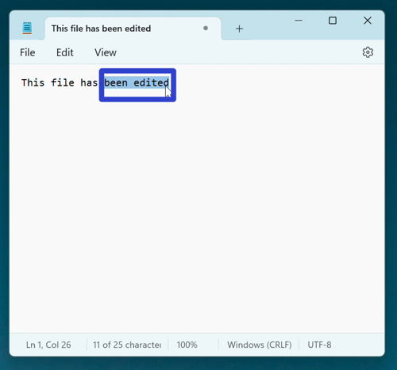
- Step 2: In the menu that opens, click “Copy”. 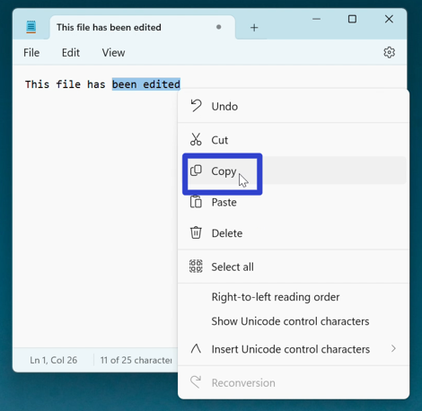
How to Copy Text With Keyboard Shortcut
How to Cut Text With Menu
- Step 1: First edit and select text in a Notepad file. Click the “Edit” button.
- Step 2: In the menu that opens, click “Cut”. Notepad copies the selected text and removes it from the window. 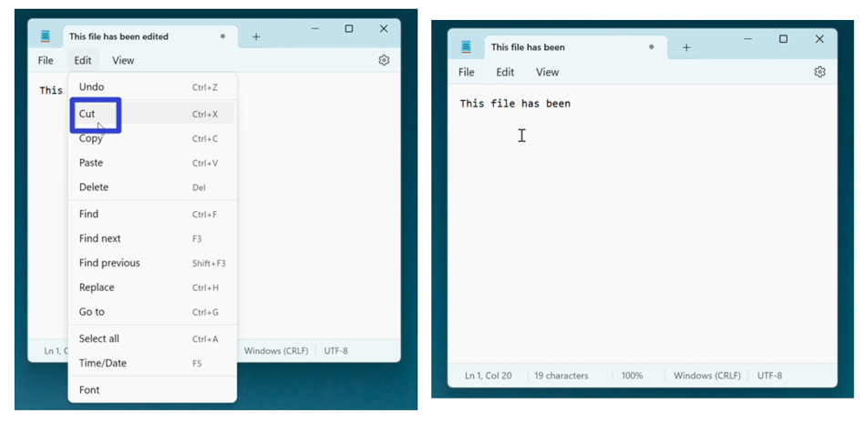
How to Cut Text With Right Click
- Step 1: Edit and select text in a Notepad file. Right click anywhere in the window. 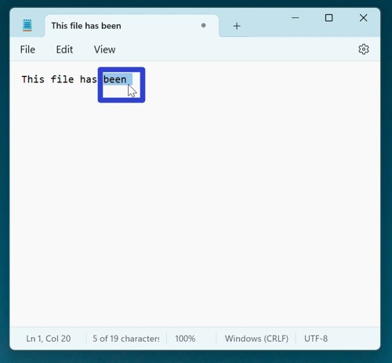
- Step 2: In the menu that opens, click “Cut”. Notepad copies the selected text and removes it from the window. 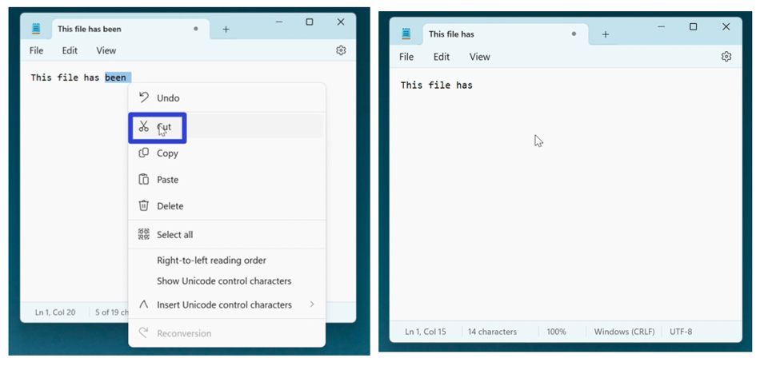
How to Cut Text With Keyboard Shortcut
How to Paste Text With Menu
- Step 1: Edit and copy or cut text in a Notepad file. Click the “Edit” button. 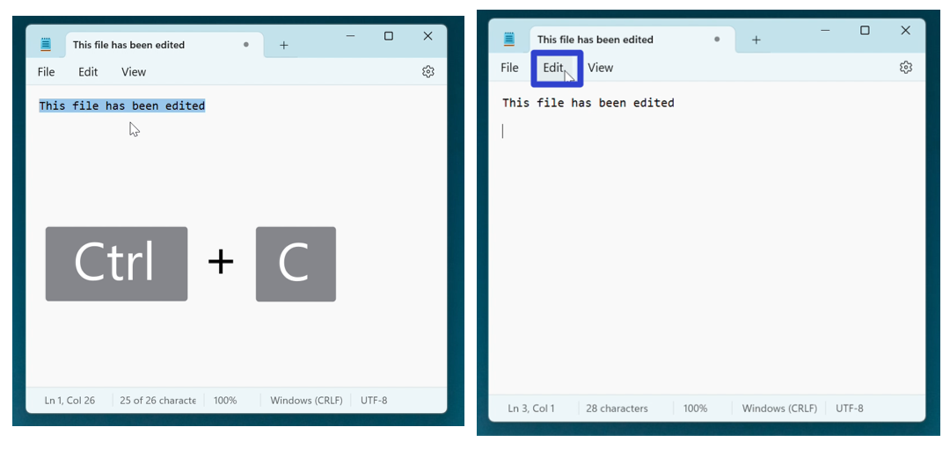
- Step 2: In the menu that opens, click “Paste”. Notepad pastes the selected text into the window. 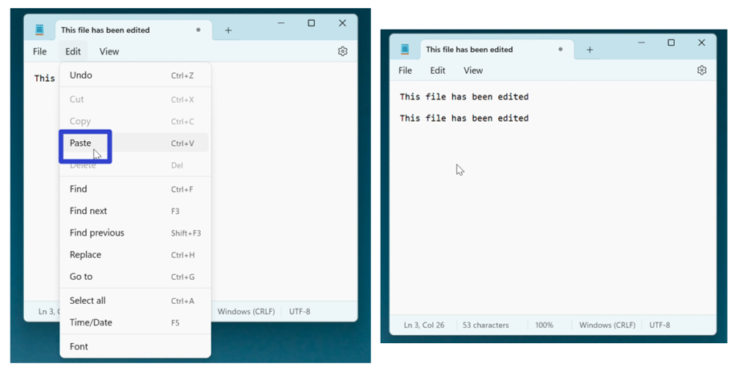
How to Paste Text With Right Click
- Step 1: First edit and copy or cut text in a Notepad file. Right click anywhere in the window. 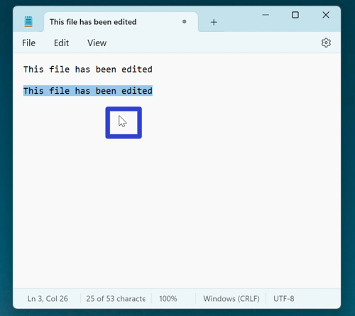
- Step 2: In the menu that opens, click “Paste”. Notepad pastes the selected text into the window. 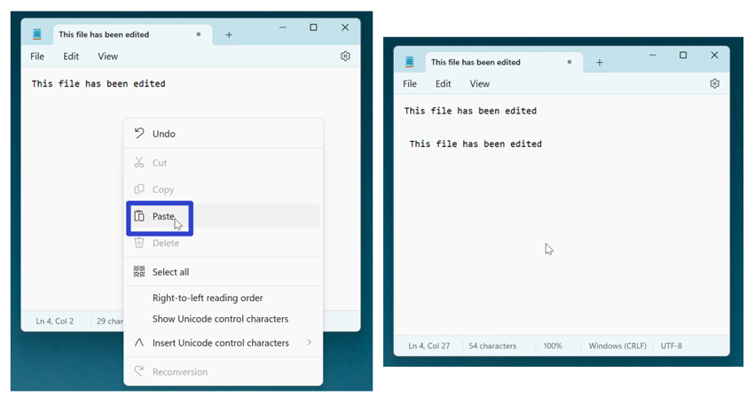
How to Paste Text With Keyboard Shortcut
How to Delete Text With Menu
- Step 1: First edit and select text in a Notepad window. Click the “Edit” button.
- Step 2: In the menu that opens, click “Delete”. Notepad deletes the selected text. 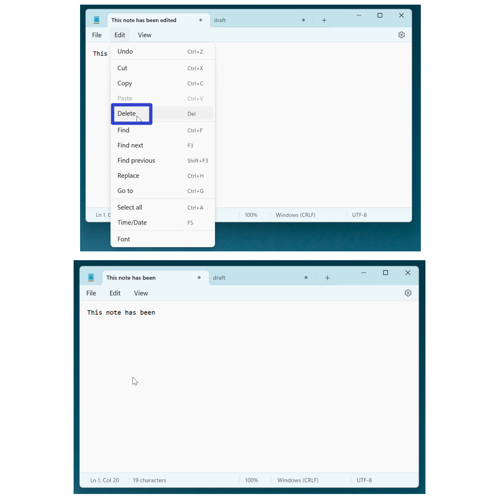
How to Delete Text With Right Click
- Step 1: Edit and select any text in a Notepad window. Right click anywhere in the window.
- Step 2: In the menu that opens, click “Delete”. Notepad deletes the selected text. 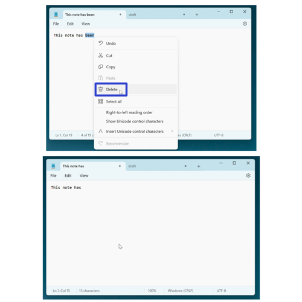
How to Delete Text With Keyboard
- Method 1: First edit and select any text in a Notepad window. On the keyboard press Delete. 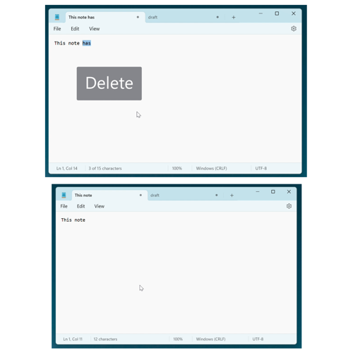
- Method 2: Edit a Notepad file and click to the right of any text. On the keyboard press or hold Backspace. 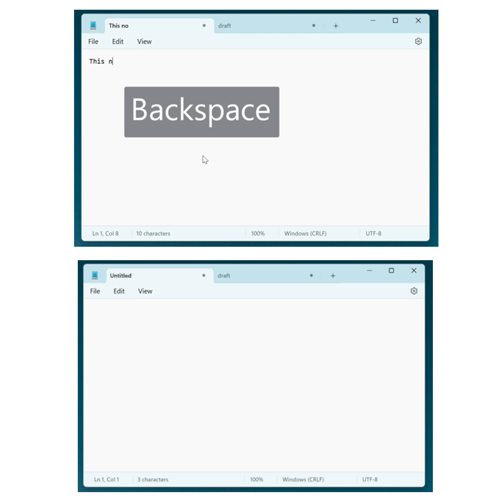
Refer to these instructions later with this free PDF tutorial.